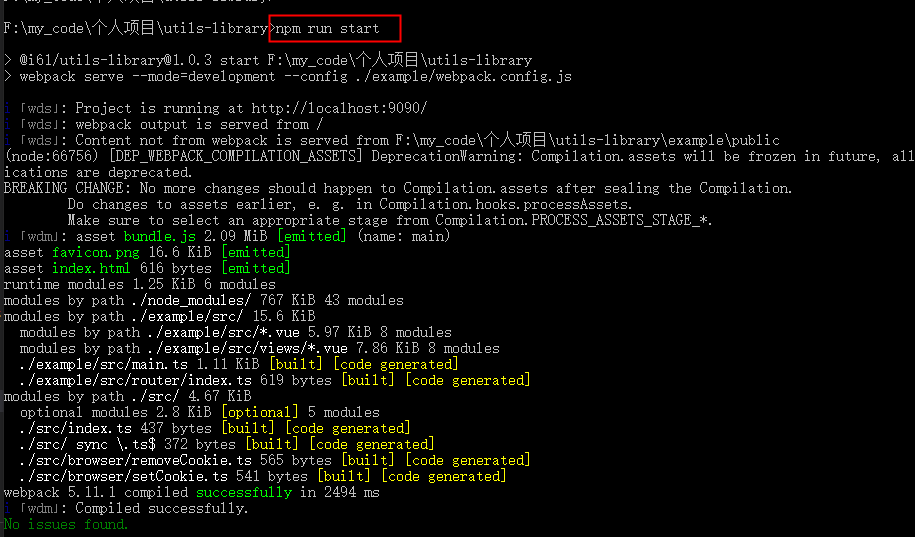
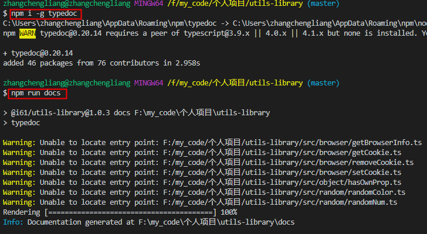
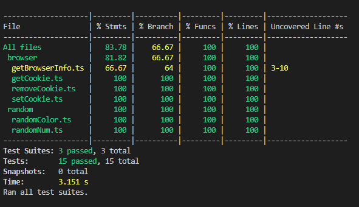

待开发：
- src/index.ts 每次加新接口，都import 新接口。解决：自动导入
- 已解决：通过webpack的api: require.context. 需要先安装声明包：@types/webpack-env
- doc说明文档 美化生成？
- 推包
- 已解决 output.libraryExport属性。src目录以文件名为函数Key，导出为 value
package.json脚本
"scripts": {
"start": "webpack serve --mode=development --config ./example/webpack.config.js",
"build:types": "tsc --emitDeclarationOnly",
"type-check": "tsc --noEmit",
"build": "tsc --noEmit && webpack --mode=production --config ./build/webpack.config.js",
"docs": "typedoc",
"lint": "eslint src/**/* --ext .js,.ts",
"jest": "jest --coverage",
"changelog": "conventional-changelog -p angular -i CHANGELOG.md -s -r 0",
"next": "npm run build && npm set registry http://verdaccio.61info.com && npm version prerelease --preid=next && npm publish --tag=next && git push",
"patch": "npm run build && npm set registry http://verdaccio.61info.com && npm version patch && npm publish && git push",
"minor": "npm run build && npm set registry http://verdaccio.61info.com && npm version minor && npm publish && git push",
"major": "npm run build && npm set registry http://verdaccio.61info.com && npm version major && npm publish && git push"
}
- npm run start: 启动example目录下的demo项目

- npm run build: 打包src目录。入口是src/index.ts

- npm run docs: 自动生成文档, 目录为docs。配置文件为typedoc.json

- npm run lint: 代码检查。可检查ts文件。配置文件为.eslintrc.js

- npm run jest: 测试。配置文件为jest.config.js

- npm run next: 发布next分支(测试环境用)
- npm run patch: 发布子版本
- npm run minor: 发布次版本号
- npm run major: 发布主版本号